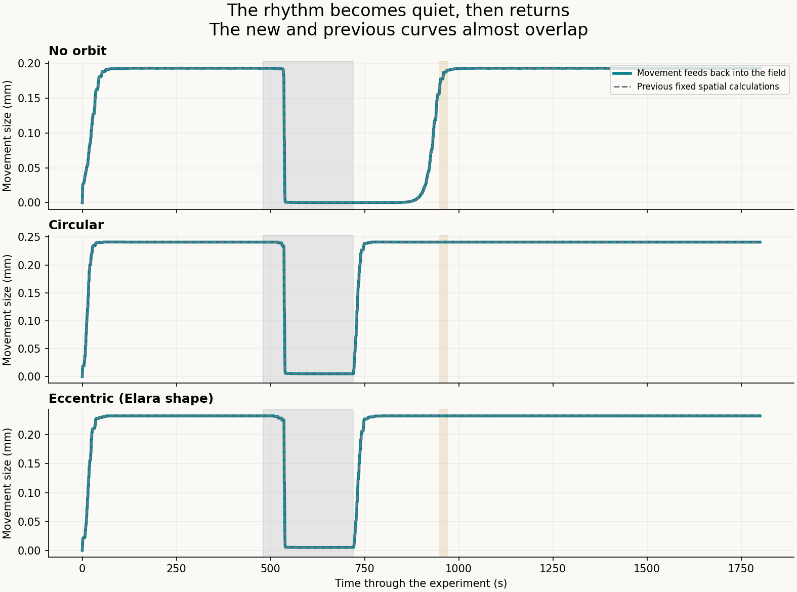
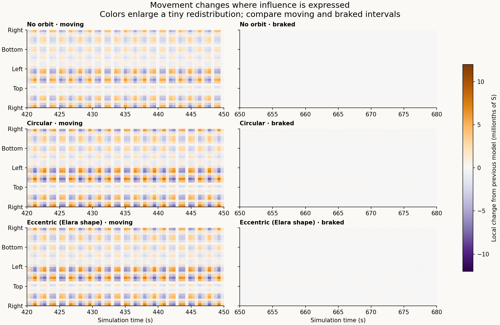
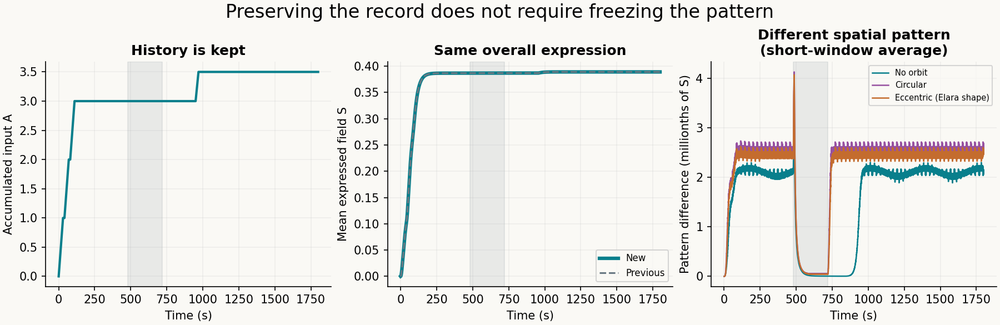

Earlier retained-history model · Play the new animation
The record stays.
Movement can reshape its expression.
The clay now changes the spatial expression of history, while the accumulated record stays intact. In these tests the change is very small, and the rhythm recovers at the same measured times as before.
History stays
Braking, restarting and changing orbit do not erase the recorded inputs. New events are added to the record.
Influence moves
The clay's real deformation changes how the field spreads and how its gradients push back on the clay.
The effect is small
The spatial pattern changes subtly. The no-orbit, circular and eccentric recovery results remain effectively the same at this resolution.
Read left to right as time passes. A higher curve means larger movement. The gray band is deliberate braking. The new and old curves almost overlap because the feedback has little effect on rhythm at these small strains.

Where the influence changes
Purple means less influence at that location than in the previous model; orange means more. White means similar expression to the previous model, with the stored history still present. These colors enlarge changes measured in millionths of the field unit. They do not mean a large physical change or a loss of the recorded history.

Open the interactive animation → · Short animated comparison

What changed in the equations
Your transport term carries the field with the material. This version also updates diffusion and physical gradients as the material deforms. That completes a two-way connection: clay movement changes the expressed field, and the field changes force on the clay. It introduces no fitted restructuring multiplier.
The existing source cap, expression relaxation and upper-only paired exchange remain declared extensions. This is an angular-field and single-shear-mode reduction; it does not resolve full fluid motion, contact, fracture or hydration. The record is preserved by its stated law. The tests check the law's consequences rather than establish how human memory works.
Numbers, controls and checks
Delays are after release. Amplitude uses a trailing 57 s window, so 57 s is its earliest eligible confirmation. Results are checked through 949.5 s before the next input. Orbital repetition has a separate ten-comparison window and tolerance .01; no-orbit motion has no synchronization label.
30 main paths and 72 refinement paths; two starts. All tested confirmation times agree on refinement. The 64-to-128-cell paired field discrepancy is 6.1e-08, while the new spatial effect reaches about 1e-5. The tighter-time paired field discrepancy is 4.39e-13. Absolute field discretization error is larger than the small effect, so matched new-minus-old differences are checked separately.
Stored-input error: 8.88e-15. Maximum difference in field means: 5.55e-15. Main normalized energy residual: 1.86e-06. Physical shear never exceeds 0.241%. The animation's shape magnification never enters the dynamics.
The diffusion-only control reproduces the spatial redistribution. Changing only the force gradient leaves S unchanged; it accounts for most of the already tiny mechanical difference. Controls and unrounded values are retained in results.json.
Inspect or reproduce
Equation derivation and limitations · Protocol · Feedback code · All path summaries · Saved numerical data · Run provenance
All material values, inputs and family-history analogies remain synthetic. No new physical clay or human measurements were collected. Adoption references remain separate from the equations. Repository publication does not deploy a website.